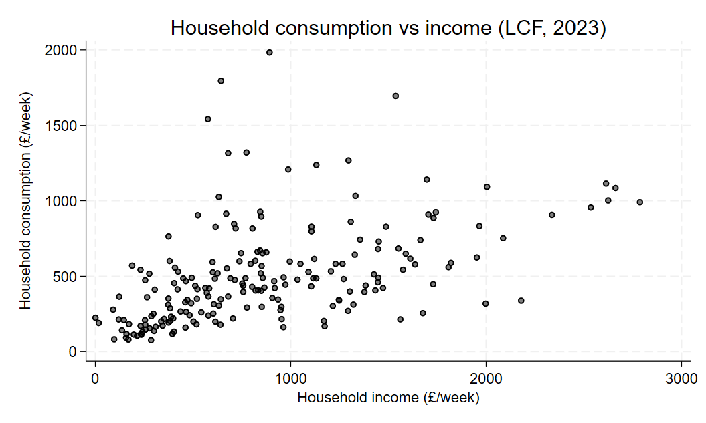
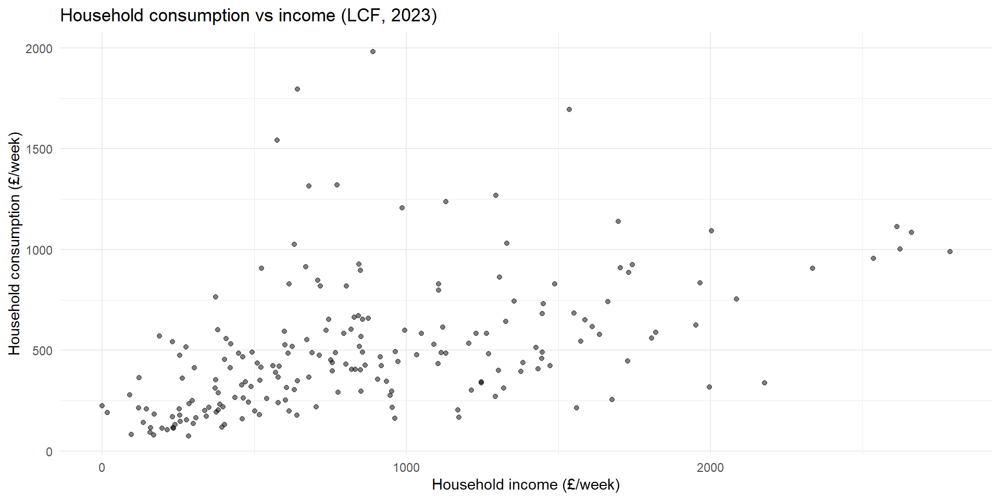
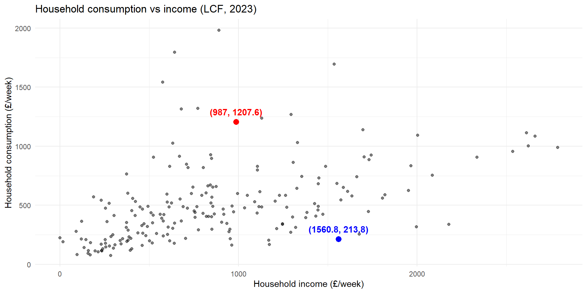
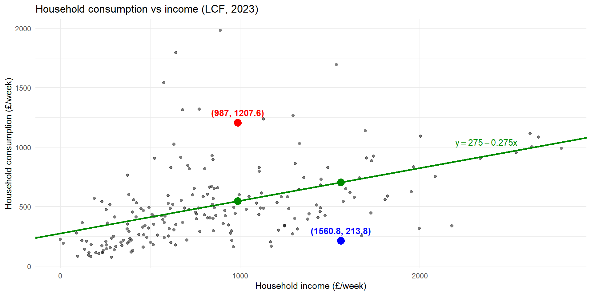
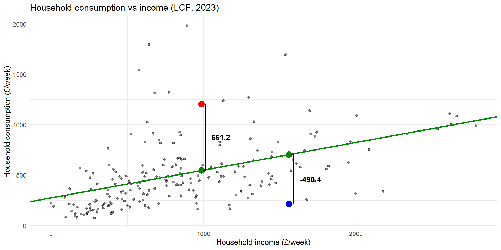
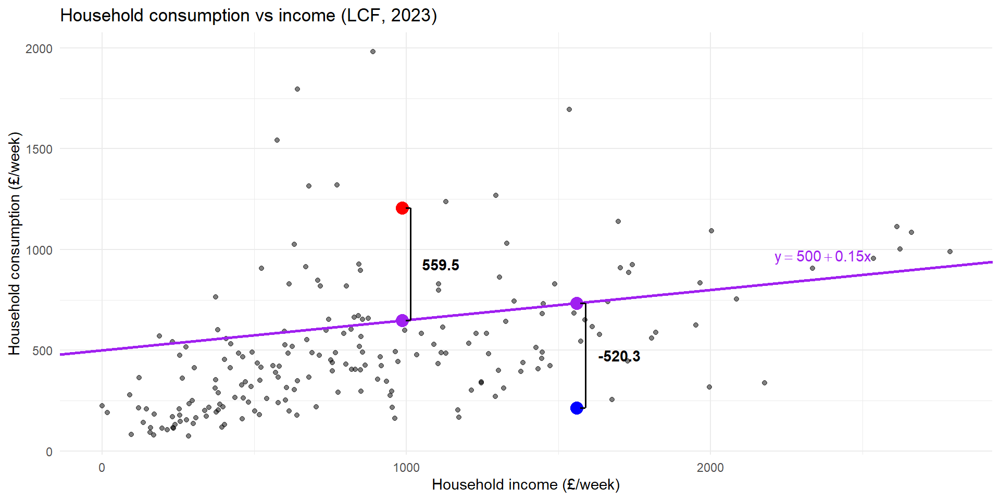
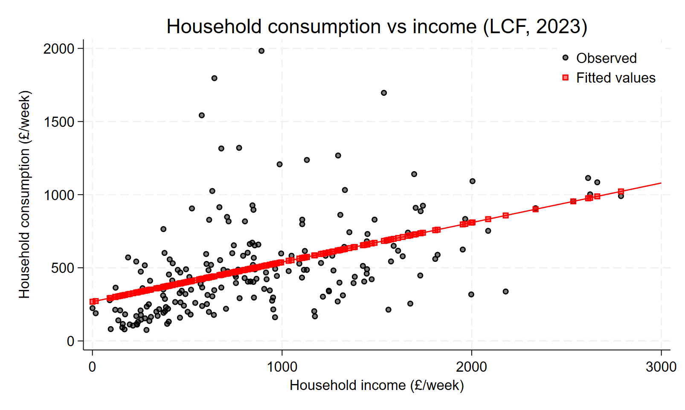
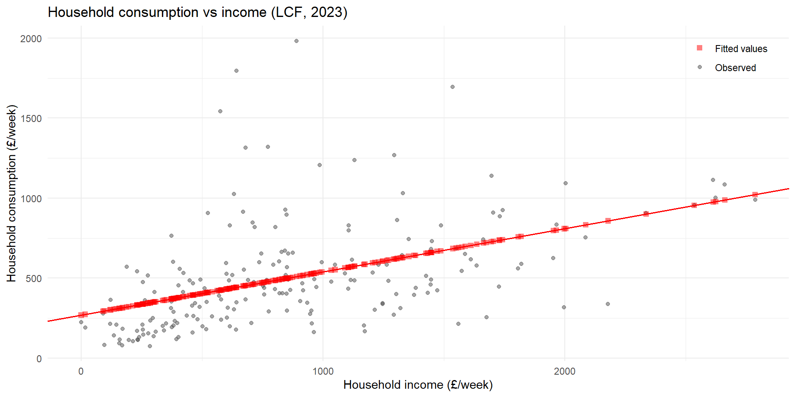
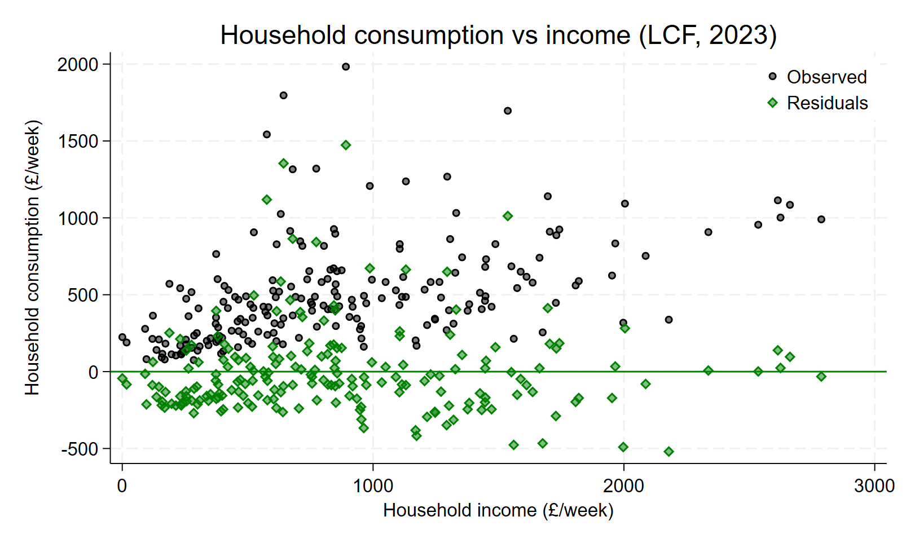
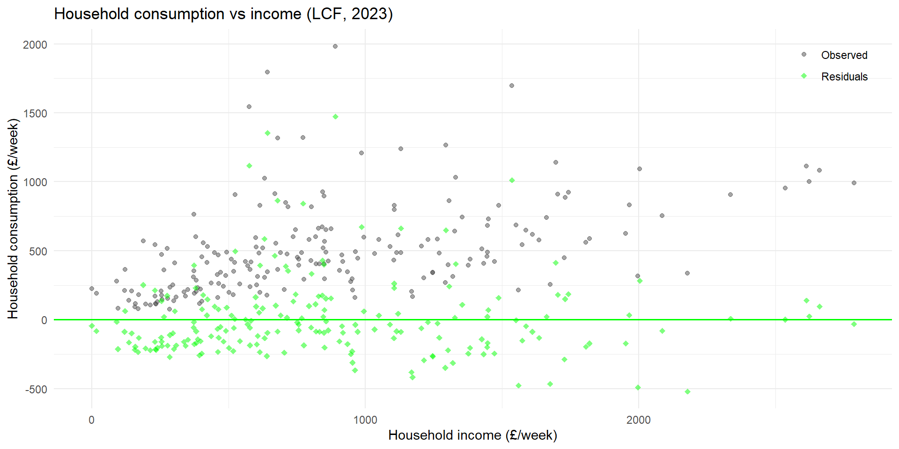

Code
* Open data
use "data/lcf_2023.dta", clear
* Plot
scatter hhcon hhinc, mc(black) mfc(%50) ytitle("Household consumption (£/week)") xtitle("Household income (£/week)") title("Household consumption vs income (LCF, 2023)")

Lecture 2
We start with the multivariate linear regression model,
\[ y_i = \beta_0 + \beta_1x_{i1} + \beta_2x_{i2}+\dots + \beta_kx_{ik} + u_i \]
which could represent:
under different assumptions.
Curcially, the model includes data: for each observation we observation
\[ [y_i, x_{i1}, x_{i2}, \dots, x_{ik}] \quad i = 1, \dots, n \]
Stacked together, we have a matrix of data:
\[ \begin{bmatrix} y_1 & x_{11} & x_{12} & \dots & x_{1k} \\ y_2 & x_{21} & x_{22} & \dots & x_{2k} \\ \vdots & \vdots & \vdots & \ddots & \vdots \\ y_n & x_{n1} & x_{n2} & \dots & x_{nk} \\ \end{bmatrix} \]
Suppose you started with the data? For example, the Living Costs and Food Survey: a household level dataset with information on consumption and income.
\[ [cons_i, inc_i] \quad i = 1, \dots, n \]
And suppose we had an economic model that suggested a linear relationship between consumption and income (i.e. constant propensity to consume). We might then posit a simple linear regression model:
\[ cons_i = \beta_0 + \beta_1 inc_i + u_i \]
* Open data
use "data/lcf_2023.dta", clear
* Plot
scatter hhcon hhinc, mc(black) mfc(%50) ytitle("Household consumption (£/week)") xtitle("Household income (£/week)") title("Household consumption vs income (LCF, 2023)")
# Packages
library(haven) # To load Stata .dta file
library(ggplot2)
# Load the Stata file
lcf_data <- read_dta("data/lcf_2023.dta")
# Plot
ggplot(lcf_data, aes(x = hhinc, y = hhcon)) +
geom_point(alpha = 0.5) +
labs(x = "Household income (£/week)",
y = "Household consumption (£/week)",
title = "Household consumption vs income (LCF, 2023)") +
theme_minimal()
Consider the following two observations:

Suppose we plot a line through the points:

The vertical distance between points in the data and the line tells us how the difference between the “prediction” of the line (for a given \(inc_i\)) and the actual data.

What if we chose a different plot?

Which guess was better? Why?
Let’s formalize the above process:
Goal: we want to pick the line that best fits the data.
Problem: what do we mean by “fit”?
\[ \widehat{cons}_i = b_0 + b_1 inc_i \]
where \([b_0,b_1]\) are the chosen parameters.
For example,
\(\widehat{cons}_i = 275 + 0.275 inc_i\)
\(\widehat{cons}_i = 500 + 0.15 inc_i\)
We need a measure of distance:
Candidate 1: difference
\[ cons_i - \widehat{cons}_i \]
Candidate 2: absolute value
\[ |cons_i - \widehat{cons}_i| \]
Candidate 3: squared deviation
\[ (cons_i - \widehat{cons}_i)^2 \]
What we care about is the difference between the prediction and data across all observations:
\[ \sum_{i=1}^{n}(cons_i - \widehat{cons}_i)^2 \]
And since \(\widehat{cons}_i = b_0 + b_1 inc_i\)
\[ \sum_{i=1}^{n}(cons_i - b_0 - b_1 inc_i)^2 \]
The value of these squared deviations (from the prediction) depend on \([b_0,b_1]\). It seems intuitive then to pick the values that minimize this value:
\[ \underset{b_0,b_1}{\min} \quad\sum_{i=1}^{n}(cons_i - b_0 - b_1 inc_i)^2 \]
Minimization problem:
\[ \hat{\beta}=\underset{b}{\arg\min} \quad\sum_{i=1}^{n}(y_i - b_0 - b_1x_{i1}-\dots-b_kx_{ik})^2 \]
where \(\hat{\beta} = [\hat{\beta}_0,\hat{\beta}_1,\dots,\hat{\beta}_k]\) and \(b=[b_0,b_1,\dots,b_k]\).
Differentiate w.r.t. \(b_j\)’s and then set to 0. For \(\hat{\beta}_0\) (the constant):
\[ \begin{aligned} & 0=2\sum_{i=1}^{n}(y_i - \hat{\beta}_0 - \hat{\beta}_1x_{i1}-\dots-\hat{\beta}_kx_{ik}) \\ \Rightarrow \quad & 0=\frac{1}{n}\sum_{i=1}^{n}(y_i - \hat{\beta}_0 - \hat{\beta}_1x_{i1}-\dots-\hat{\beta}_kx_{ik}) \\ \Rightarrow \quad & \hat{\beta}_0 = \bar{y} - \hat{\beta}_1\bar{x}_{1}-\dots-\hat{\beta}_k\bar{x}_{k} \end{aligned} \]
The inclusion of a constant in the model ensures that the residual is always mean zero:
\[ 0=\sum_{i=1}^{n}(y_i - \hat{\beta}_0 - \hat{\beta}_1x_{i1}-\dots-\hat{\beta}_kx_{ik})=\sum_{i=1}^{n}\hat{u}_i \]
For \(\hat{\beta}_j\quad j=1,\dots,k\)
\[ \begin{aligned} & 0=2\sum_{i=1}^{n}(y_i - \hat{\beta}_0 - \hat{\beta}_1x_{i1}-\dots-\hat{\beta}_kx_{ik})x_{ij} \\ \Rightarrow \quad &0= \sum_{i=1}^{n}(y_i - \hat{\beta}_0 - \hat{\beta}_1x_{i1}-\dots-\hat{\beta}_kx_{ik})x_{ij} \end{aligned} \]
There are \(k\) of these first-order conditions (plus the 1 for the constant)
\(\Rightarrow\) \(k+1\) equations and \(k+1\) unknowns.
In the case of a single regressor, the solution is more easily solved.
\[ \hat{\beta}_0 = \bar{y} - \hat{\beta}_1\bar{x} \]
\[ \begin{aligned} & 0=2\sum_{i=1}^{n}(y_i - \hat{\beta}_0 - \hat{\beta}_1x_{i})x_{i} \\ \Rightarrow \quad & 0=\sum_{i=1}^{n}\big(y_i - (\textcolor{blue}{\bar{y} - \hat{\beta}_1\bar{x}}) - \hat{\beta}_1x_{i}\big)x_{i} \qquad \text{substitute in}\quad \textcolor{blue}{\hat{\beta}_0}\\ \Rightarrow \quad & 0=\sum_{i=1}^{n}\big((y_i -\bar{y}) - \hat{\beta}_1(x_{i}-\bar{x})\big)x_{i} \end{aligned} \]
The next step explooits the fact that:
\[ \sum_{i=1}^{n}\hat{u}_i=0 \Rightarrow \bar{x}\sum_{i=1}^{n}\hat{u}_i=0 \Rightarrow \textcolor{red}{\sum_{i=1}^{n}\hat{u}_i\bar{x}}=0 \]
Therefore we can minus 0 from the right-hand side without changing anything.
\[ \begin{aligned} & 0=\sum_{i=1}^{n}\big(\underbrace{(y_i -\bar{y}) - \hat{\beta}_1(x_{i}-\bar{x})}_{\hat{u}_i}\big)x_{i} -\textcolor{red}{\sum_{i=1}^{n}\hat{u}_i\bar{x}}\\ \Rightarrow \quad & 0=\sum_{i=1}^{n}\big((y_i -\bar{y}) - \hat{\beta}_1(x_{i}-\bar{x})\big)(x_{i}-\bar{x}) \\ \Rightarrow \quad & \hat{\beta}_1 = \frac{\sum_{i=1}^{n}(y_i -\bar{y})(x_{i}-\bar{x})}{\sum_{i=1}^{n}(x_{i}-\bar{x})^2} = \frac{\widehat{Cov}(y_i,x_i)}{\widehat{Var}(x_i)} \end{aligned} \]
Recall from Lecture 1, under the MLR assumptions (notably, \(E[x_iu_i]=0\))
\[ \begin{aligned} \beta_1 =& \frac{Cov(y_i,x_i)}{Var(x_i)} \\ \beta_0 =& E[y_i]-\beta_1E[x_i] \end{aligned} \]
The OLS estimators for a univariate model are the sample analogue
\[ \begin{aligned} \hat{\beta}_1 =& \frac{\widehat{Cov}(y_i,x_i)}{\widehat{Var}(x_i)} \\ \hat{\beta}_0 =& \bar{y} - \hat{\beta}_1\bar{x} \end{aligned} \]
OLS replaces expectations with sample averages.
Given the OLS estimates, we can decompose the outcome into two parts: fitted values (\(\hat{y}_i\)) and residual (\(\hat{u}_i\))
\[ y_i = \underbrace{\hat{\beta_0} + \hat{\beta_1} x_i}_{\hat{y}_i} + \hat{u}_i \]
where:
\(\sum_{i=1}^{n} \hat{u}_i=0\): residuals are mean zero
\(\sum_{i=1}^{n} x_i\hat{u}_i=0\): residuals and regressors are uncorrelated
\(\sum_{i=1}^{n} \hat{y}_i\hat{u}_i=0\): residuals and fitted values are uncorrelated
\(\sum_{i=1}^{n} \hat{y}_i = \sum_{i=1}^{n} y_i\): fitted values have the same mean as outcome
\(\sum_{i=1}^{n} y_i\hat{u}_i=\sum_{i=1}^{n} (\hat{y}_i+\hat{u}_i)\hat{u}_i=\sum_{i=1}^{n} \hat{u}_i^2\)
* Estimate univariate linear regression
regress hhcon hhinc Source | SS df MS Number of obs = 200
-------------+---------------------------------- F(1, 198) = 57.08
Model | 4842359.39 1 4842359.39 Prob > F = 0.0000
Residual | 16798378.5 198 84840.2954 R-squared = 0.2238
-------------+---------------------------------- Adj R-squared = 0.2198
Total | 21640737.9 199 108747.427 Root MSE = 291.27
------------------------------------------------------------------------------
hhcon | Coefficient Std. err. t P>|t| [95% conf. interval]
-------------+----------------------------------------------------------------
hhinc | .2705895 .0358165 7.55 0.000 .1999587 .3412203
_cons | 268.0611 37.42847 7.16 0.000 194.2515 341.8707
------------------------------------------------------------------------------# Estimate univariate linear regression
model1 <- lm(hhcon ~ hhinc, data = lcf_data)
# View results
summary(model1)
Call:
lm(formula = hhcon ~ hhinc, data = lcf_data)
Residuals:
Min 1Q Median 3Q Max
-519.70 -177.46 -60.08 95.78 1473.71
Coefficients:
Estimate Std. Error t value Pr(>|t|)
(Intercept) 268.06105 37.42847 7.162 1.53e-11 ***
hhinc 0.27059 0.03582 7.555 1.52e-12 ***
---
Signif. codes: 0 '***' 0.001 '**' 0.01 '*' 0.05 '.' 0.1 ' ' 1
Residual standard error: 291.3 on 198 degrees of freedom
Multiple R-squared: 0.2238, Adjusted R-squared: 0.2198
F-statistic: 57.08 on 1 and 198 DF, p-value: 1.515e-12* Generate fitted values and residuals
predict fitted
predict residual, resid* Compute averages
sum hhcon fitted residual Variable | Obs Mean Std. dev. Min Max
-------------+---------------------------------------------------------
hhcon | 200 504.1663 329.7687 75.16 1983.02
fitted | 200 504.1663 155.9919 268.1639 1022.213
residual | 200 -1.28e-07 290.5408 -519.6953 1473.709* Compute variance-covariance matrix
corr hhcon fitted residual, cov(obs=200)
| hhcon fitted residual
-------------+---------------------------
hhcon | 108747
fitted | 24333.5 24333.5
residual | 84414 -.000076 84414# Get fitted values and residuals
reg_vals <- data.frame(
hhcon = lcf_data$hhcon,
fitted = fitted(model1),
resid = residuals(model1)
)# Compute averages
colMeans(reg_vals) hhcon fitted resid
5.041663e+02 5.041663e+02 2.611245e-14 # Compute variance-covariance matrix
var(reg_vals) hhcon fitted resid
hhcon 108747.43 2.433346e+04 8.441396e+04
fitted 24333.46 2.433346e+04 2.331285e-12
resid 84413.96 2.331285e-12 8.441396e+04* Plot
twoway (scatter hhcon hhinc, mc(black) mfc(%50)) (scatter fitted hhinc, mc(red) mfc(%50) msize(small) ms(S)) (function y = _b[_cons] + _b[hhinc]*x, lc(red) lp(solid) range(0 3000)), ytitle("Household consumption (£/week)") xtitle("Household income (£/week)") title("Household consumption vs income (LCF, 2023)") legend(order(1 "Observed" 2 "Fitted values") r(2) pos(2) ring(0))
# Data frame with the x-variable plus fitted values and residuals
plot_vals <- data.frame(
hhinc = model.frame(model1)$hhinc, # exactly the rows lm() used
hhcon = model.frame(model1)$hhcon,
fitted = fitted(model1),
resid = residuals(model1)
)
# Plot
ggplot(plot_vals, aes(x = hhinc, y = hhcon)) +
geom_point(aes(colour = "Observed"), alpha = 0.5) +
geom_point(aes(y = fitted, colour = "Fitted values"), shape = 15, size = 2, alpha = 0.5) +
geom_abline(intercept = coef(model1)[1], slope = coef(model1)[2],
colour = "red", linewidth = 0.7) +
scale_colour_manual(values = c("Observed" = "grey30",
"Fitted values" = "red")) +
labs(x = "Household income (£/week)",
y = "Household consumption (£/week)",
title = "Household consumption vs income (LCF, 2023)",
colour = NULL) +
theme_minimal() +
theme(legend.position = c(0.98, 0.98),
legend.justification = c(1, 1))
* Plot
twoway (scatter hhcon hhinc, mc(black) mfc(%50)) (scatter residual hhinc, mc(green) mfc(%50) msize(small) ms(D)), ytitle("Household consumption (£/week)") xtitle("Household income (£/week)") title("Household consumption vs income (LCF, 2023)") legend(order(1 "Observed" 2 "Residuals") r(2) pos(2) ring(0)) yline(0, lc(green) lp(solid))
# Data frame with the x-variable plus fitted values and residuals
plot_vals <- data.frame(
hhinc = model.frame(model1)$hhinc, # exactly the rows lm() used
hhcon = model.frame(model1)$hhcon,
fitted = fitted(model1),
resid = residuals(model1)
)
# Plot
ggplot(plot_vals, aes(x = hhinc, y = hhcon)) +
geom_point(aes(colour = "Observed"), alpha = 0.5) +
geom_point(aes(y = resid, colour = "Residuals"), shape = 18, size = 2, alpha = 0.5) +
geom_hline(yintercept = 0, colour = "green", linewidth = 0.7) +
scale_colour_manual(values = c("Observed" = "grey30",
"Residuals" = "green")) +
labs(x = "Household income (£/week)",
y = "Household consumption (£/week)",
title = "Household consumption vs income (LCF, 2023)",
colour = NULL) +
theme_minimal() +
theme(legend.position = c(0.98, 0.98),
legend.justification = c(1, 1))
How well did we fit the data?
We have decomposed each observation into two parts:
\[ y_i = \underbrace{\hat{y}_i}_\text{fitted valeus} + \underbrace{\hat{u}_i}_\text{residual} \]
We can apply this decomposition to the total sum of squares (SST)
\[ \text{SST} \equiv \sum_{i=1}^n (y_i-\bar{y})^2 \]
We can show that (Tutorial 1),
\[ \text{SST} = \text{SSE} + \text{SSR} \]
where,
\[ \text{SSE} \equiv \sum_{i=1}^n (\hat{y}_i-\bar{y})^2 \]
\[ \text{SSR} \equiv \sum_{i=1}^n \hat{u}_i^2 \]
One key measure of fit then is:
\[ \mathbf{R}^2 = \frac{\text{SSE}}{\text{SST}} = 1-\frac{\text{SSR}}{\text{SST}} \]
This measure captures the share of the variance in the outcome variable explained by the regressors.
Many students make the mistake of thinking that higher \(\mathbf{R}^2\) is always better. Here are reasons this need not be the case:
In social sciences, the DGP is often very complex and we don’t observe many explanatory variables.
If we care about the relationship between \(y\) and a specific \(x_j\), we do not necessarily care about explaining all of \(y\).
We can always add variables and (mechanically) increase \(\mathbf{R}^2\); however, this comes at a potential cost:
we MAY inadvertantly increase the variance of our estimates (e.g., irrelevant variables)
we MAY end up adding “bad controls”
An alternative measure fit is the adjusted \(\mathbf{R}^2\):
\[ \overline{\mathbf{R}}^2 = 1 - \frac{\text{SSR}/(n-k-1)}{\text{SST}/n} \]
where,
As you increase \(k\), you decrease \(\overline{\mathbf{R}}^2\)